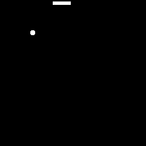

Snake Game

The actual Name of the Project is CAMLIV (Camera Live Interaction Vision) and it is a browser-based machine learning game project where the player controls a classic Snake game using hand gestures in front of a webcam instead of a keyboard. It runs entirely in the browser using TensorFlow.js and MobileNet, so no installation or backend server is required. Making this project involved several challenges, including setting up the webcam feed, training the machine learning model to recognize hand gestures, and integrating the model's predictions with the game logic. The result is an innovative and interactive gaming experience that combines computer vision and classic gameplay. My Friend Rohit Mehra helped me a lot in making this project. Know more about how to play
Technologies Used: HTML, CSS, JavaScript, TensorFlow.js, MobileNet
Working on Game2